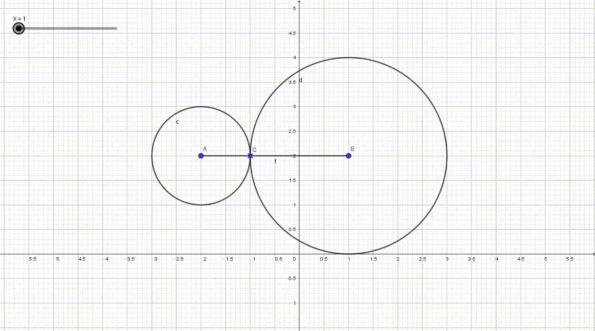
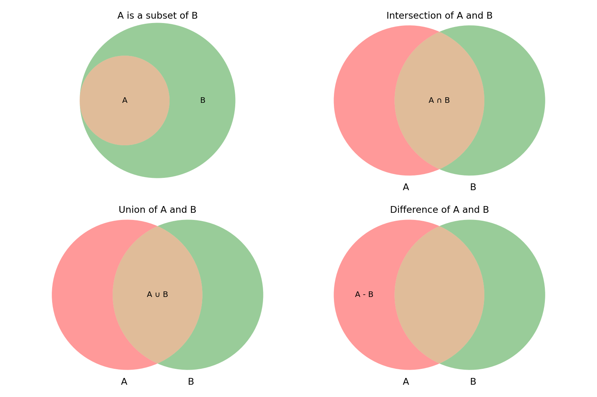

學測範圍數學公式證明
前言
模考前臨時抱佛腳，常常公式要用到的時候才現場推，推完別人都寫完了，只好來整理一下，但我不喜歡背公式所以八成下次我還是會現場推…
不過認真講，背公式感覺實在有點玷汙數學，而且大部分也都不用背隨便想想就有了，其他的就是知道有這個公式，了解推導的細節，盡量推得快一點，這樣要用到時就能馬上在腦內推出來，這樣就跟背的效果一樣啦 (●‘◡’●)
要是有發現我寫錯的話拜託留言告訴我一下，或者你想幫我改，歡迎來 Pull
Request
🔔建議使用電腦或平板觀看，才能獲得更好的閱讀體驗
✨側邊欄有目錄，點擊即可跳轉╰(°▽°)╯
要是用手機的話這邊也有目錄
實數
根號相加 / 減比大小
這其實根本沒必要當成一個性質，但他實在太常出現了，就順便寫一下。通常這種題目是有好幾組兩個根號相加，然後根號內數字相加相同，通常是教說要開平方比大小，但其實可以從根號的下凹性質解決，假設題目是 \(\sqrt{3}+\sqrt{5}\)、\(\sqrt{2}+\sqrt{6}\)，那就是離中心點 \(4\) 遠的值會比較小  另外還有一種考法是兩個根號相減，根號內差值相同，一樣用下凹的性質，斜率遞減，所以是比較小的那組會比較大，假設題目是 \(\sqrt{5}-\sqrt{3}\)、\(\sqrt{7}-\sqrt{5}\)，那就是 \(\sqrt{5}-\sqrt{3}\) 比較大
另外還有一種考法是兩個根號相減，根號內差值相同，一樣用下凹的性質，斜率遞減，所以是比較小的那組會比較大，假設題目是 \(\sqrt{5}-\sqrt{3}\)、\(\sqrt{7}-\sqrt{5}\)，那就是 \(\sqrt{5}-\sqrt{3}\) 比較大
絕對值
好像沒有🫠 
指、對數

- 指數不等式：
- \(a^x>a^y\)，\(x>y\)，\(a>1\)
- \(a^x>a^y\)，\(x<y\)，\(0<a<1\)
- \(a^x<a^y\)，\(x>y\)，\(0<a<1\)
- \(a^x<a^y\)，\(x<y\)，\(a>1\)
- \(a^x>a^y\)，\(x>y\)，\(a>1\)
- 對數不等式：
- \(log_ax>log_ay\)，\(x>y\)，\(a>1\)
- \(log_ax>log_ay\)，\(x<y\)，\(0<a<1\)
- \(log_ax<log_ay\)，\(x>y\)，\(0<a<1\)
- \(log_ax<log_ay\)，\(x<y\)，\(a>1\)
- \(log_ax>log_ay\)，\(x>y\)，\(a>1\)
- 對數性質：
- \(log_a1=0\)
- \(log_aa=1\)
- \(log_ab=\frac{1}{log_ba}\)
- \(log_ab=\frac{log_cb}{log_ca}\)
- \(log_ab=log_ac*log_cb\)
- \(log_ab=log_ac+log_cb\)
- \(log_ab=log_ax*log_bx\)
- \(log_ab=\frac{log_ax}{log_bx}\)
- \(log_ax^m=mlog_ax\)
- \(log_ab\cdot log_bc\cdot log_cd\cdot ...\cdot log_nx\) \(=log_ax\)
- \(a^{log_bc}=c^{log_ba}\)
- \(log_a1=0\)
這應該不用證明吧，太簡單了😉
點 & 線 (平面)
直線方程式
- 點斜式：\(y-y_1=m(x-x_1)\)
- 截距式：\(\frac{x}{a} + \frac{y}{b} = 1\) (\(a\)、\(b\) 為 \(x\)、\(y\) 軸截距)
- 斜截式：\(y=mx+b\) (\(m\) 為斜率，\(b\) 為 \(y\) 軸截距)
- 一般式：\(Ax+By+C=0\) (\(A\)、\(B\)、\(C\) 為實數)
因為此直線斜率為 \(\frac{-A}{B}\)，則法線斜率為 \(\frac{B}{A}\)，則其法向量為 \(\vec{n}=(A,B)\)
- 參數式：\(\begin{cases} x=x_0+at \\ y=y_0+bt \end{cases}\) (\(x_0\)、\(y_0\) 為直線上一點，\(a\)、\(b\) 為 \(x\)、\(y\) 方向向量)
點到直線距離
使用時機：圓與直線交點數 (圓心到直線距離)
\(P(x_0,y_0), L:Ax+By+C=0\)
\(d(P,L)=\frac{|Ax_0+By_0+C|}{\sqrt{A^2+B^2}}\)
證明：方法很多，不過我偏好用向量 (喔不，用內積會比較快，算了懶得改了)
\(\vec{n} = (A,B)\)
使得存在 \((x_1, y_1) = (x_0, y_0) + k\vec{n}\)
滿足 \(Ax_1+By_1+C=0\)
且其中 \(|k\vec{n}| = d(P,L)\)
又 \(k = \frac{Ax_0+B_y0+C}{A^2+B^2}\)
故 \[|k\vec{n}| = |k||\vec{n}| = \frac{|Ax_0+By_0+C|}{\sqrt{A^2+B^2}} = d(P, L)\]
角平分線 (點到直線距離類推)
平面上有 \(P(x_0,y_0),\) \(L_1:A_1x+B_1y+C_1=0,\) \(L_2:A_2x+B_2y+C_2=0\)，其中 \(P\) 點在 \(L_1\)、\(L_2\) 的角平分線上，即 \(P\) 點到 \(L_1\)、\(L_2\) 的距離相等，則 \(d(P,L_1)=d(P,L_2)\)
故 \(\frac{|A_1x_0+B_1y_0+C_1|}{\sqrt{A_1^2+B_1^2}}=\frac{|A_2x_0+B_2y_0+C_2|}{\sqrt{A_2^2+B_2^2}}\)
則 \(\frac{A_1x_0+B_1y_0+C_1}{\sqrt{A_1^2+B_1^2}}=\pm\frac{A_2x_0+B_2y_0+C_2}{\sqrt{A_2^2+B_2^2}}\)
則 \(P\) 點所在直線為：\(\frac{A_1x+B_1y+C_1}{\sqrt{A_1^2+B_1^2}}=\pm\frac{A_2x+B_2y+C_2}{\sqrt{A_2^2+B_2^2}}\)
另解：利用直線系，確定兩條直線方向向量一樣長，然後直接相加，若兩方向向量夾角為銳角則相加為銳角角平分線，相減則為鈍角，反之則相加為鈍角相減為銳角，例子如下圖：

兩直線夾角
平面上有 \(L_1:A_1x+B_1y+C_1=0,\) \(L_2:A_2x+B_2y+C_2=0\)，兩直線夾角為 \(\theta\)，其中 \(0\leq\theta\leq\pi\)
- 用內積：\(\cos\theta=\pm\frac{A_1A_2+B_1B_2}{\sqrt{A_1^2+B_1^2}\sqrt{A_2^2+B_2^2}}\)
兩直線法向量分別為 \(\vec{n_1}=(A_1,B_1)\)、\(\vec{n_2}=(A_2,B_2)\)，則 \(\cos\theta=\frac{\vec{n_1}\cdot\vec{n_2}}{|\vec{n_1}||\vec{n_2}|}\)，另一角為 \(\pi-\theta\) - 用差角公式：\(\tan\theta=\pm\frac{m_1-m_2}{1+m_1m_2}=\pm\frac{A_1B_2-A_2B_1}{A_1A_2+B_1B_2}\)
兩直線斜率分別為 \(m_1=\frac{-A_1}{B_1}\)、\(m_2=\frac{-A_2}{B_2}\)，則 \(\tan\theta=\frac{m_1-m_2}{1+m_1m_2}\)，另一角為 \(\pi-\theta\)
圓
圓方程式
- 標準式：\(x^2+y^2=r^2\) (\(r\) 為半徑)
- 一般式：\((x-a)^2+(y-b)^2=r^2\) (\(a\)、\(b\) 為圓心，\(r\) 為半徑)
- 阿波羅圓：平面上給定 \(A、B\) 兩點，若動點 \(P\) 滿足 \(\overline{PA}=k\overline{PB}\)(\(k\) 不為 \(1\) 或 \(0\))，則 \(P\) 點軌跡為一圓，但這欣賞就好應該是不會考

圓系
簡單來說就是兩個圓方程式相加 (或是可以各乘上某個數字後相加) 就會得到一個新的圓 (根據圓方程式所乘上的數字會有無限多種)，並且會穿過原先兩圓的交點 (如果原先有交點的話)，同樣的如果是一個圓跟一條線就會是會穿過原先線與圓交點的新圓 (一樣如果原先有焦點的話)。特別的當兩圓相減使得 \(x^2\)、\(y^2\) 係數為零時，會得到一條直線，也就是所謂根軸，這條直線就會是穿過原先兩圓的交點的直線。
舉例來說，如果有兩個圓
\(C_1:x^2+y^2+d_1x+e_1y+f_1=0,\)
\(C_2:x^2+y^2+d_2x+e_2y+f_2=0\)
則 \(aC_1+bC_2=0,\) 其中 \(a,b\in\mathbb{R}\) 代表過兩圓焦點之新圓，其圓方程式為
\[(a+b)x^2+(a+b)y^2+(ad_1+bd_2)x+(ae_1+be_2)y+(af_1+bf_2)=0\]
顯而易見地，當有一 \((x,y)\) 使得
\(C_1:x^2+y^2+d_1x+e_1y+f_1=0,\)
\(C_2:x^2+y^2+d_2x+e_2y+f_2=0\)
則此 \((x,y)\) 也會使得 \(aC_1+bC_2=0\)，故 \(aC_1+bC_2=0\) 會穿過原先兩圓的交點。
當 \(a+b=0\) 時，\(x^2\)、\(y^2\) 係數為零，\(aC_1+bC_2=0\) 為一直線，即為根軸，其直線方程式為
\[(d_1-d_2)x+(e_1-e_2)y+(f_1-f_2)=0\]
多項式
餘式定理
\(f(x)\) 為一多項式，\(a, b \in \mathbb{R}\)，則 \(f(x)\) 除以 \((ax-b)\) 的餘式為 \(f(\frac{b}{a})\)，即
\(f(x)=(ax-b)q(x)+f(\frac{b}{a})\)
因式定理
\(a_1, a_2, ...,
a_n\) 為相異實數且 \(f(a_1)=f(a_2)=...=f(a_n)=0\)
\(\iff\) \((x-a_1)(x-a_2)...(x-a_n)|f(x)\)
牛頓差值多項式
給定 \(n\) 個點 \((x_1,y_1),(x_2,y_2),...,(x_n,y_n)\)，其中 \(x_i\) 兩兩不同，則存在一多項式 \(f(x)\) 如下，滿足 \(f(x_i)=y_i\)
\[f(x) = a_1+a_2(x-x_1)+a_3(x-x_1)(x-x_2)+...+a_n(x-x_1)(x-x_2)...(x-x_{n-1})=0\]
並可藉代入 \(x=x_1\) 得到 \(a_1\)，代入 \(x=x_2\) 得到 \(a_2\)，代入 \(x=x_3\) 得到 \(a_3\)……，代入 \(x=x_n\) 得到 \(a_n\)，即可得到 \(f(x)\)
補充：
\(f(x)=y_1+\sum_{i=1}^{n-1} a_i
\prod_{j=1}^{i} (x-x_j)\)
其中 \(a_i\) 表示 \(f(x)\) 的 \(i\) 階均差
拉格朗日差值多項式
給定 \(n\) 個點 \((x_1,y_1),(x_2,y_2),...,(x_n,y_n)\)，其中 \(x_i\) 兩兩不同，則存在一多項式 \(f(x)\) 如下，滿足 \(f(x_i)=y_i\)
\[f(x) = \sum_{i=0}^{n} y_i \prod_{j=0, j\neq
i}^{n} \frac{x - x_j}{x_i - x_j}\]
詳細解說請參考牛頓插值多項式：拉格朗日怎麼說？
多項式函數圖形
- 能因式分解畫圖形
- 先看兩端趨勢，奇數次次方且首項係數為正，最右邊往上，最左邊往下，首項係數為負，最右邊往下，最左邊往上；偶數次次方，首項係數為正，最右邊往上，最左邊往上，首項係數為負，最右邊往下，最左邊往下
- 遇到因式分解内有高次方 (例如 \(f(x)=(x-1)(x-2)^2(x-3)^3\))，偶數次方與 \(x\) 軸相切，奇數次方不用理他，由最左或最右開始畫 (依照先前的趨勢上下)，以 \(f(x)=(x-1)(x-2)^2(x-3)^3\) 為例，先看次方數為 6 次，首項係數為正，則最左邊往上，最右邊往上，加設從最右邊開始看，一開始會從 \((3,0)\) 由 \(x\) 軸上方穿入，在 \((2,0)\) 與 \(x\) 軸相切後再從 \((1,0)\) 穿出 \(x\) 軸，如下方所示。

- 先看兩端趨勢，奇數次次方且首項係數為正，最右邊往上，最左邊往下，首項係數為負，最右邊往下，最左邊往上；偶數次次方，首項係數為正，最右邊往上，最左邊往上，首項係數為負，最右邊往下，最左邊往下
- 不能因式分解 \(\Rightarrow\) 基本上學測題目靠微分都可解

奇淫技巧
- 類牛頓法變型，利用已知除式與餘式假設多項式，以減少未知數，例子：
已知一實係數多項式 \(f(x)\) 除以 \((x-1)\) 的餘式為 \(2\)，除以 \((x-2)\) 的餘式為 \(3\)，求 \(f(x)\) 除以 \((x-1)(x-2)\) 的餘式。
\(f(x)=\) \((x-1)(x-2)q(x)+a(x-1)+2\)
\(f(2)=3=a+2\)
\(a=1\)
\(f(x)=(x-1)(x-2)q(x)+x+1\)
- 兩函數圖形是否可經由平移求得 (類泰勒展開)：
有二多項式函數 \(f(x)=a_0+a_1x+a_2x^2+...+a_nx^n\)、\(g(x)=b_0+b_1x+b_2x^2+...+b_nx^n\)
若 \(f(x)\)、\(g(x)\) 圖形可經由平移求得，則滿足：
\(f'(k)=g'(k),\) \(f''(k)=g''(k), ..., f^{(n)}(k)\) \(=g^{(n)}(k)\)，其中 \(k\) 滿足 \(f^{(n-1)}(k)=g^{(n-1)}(k)\)
數列與級數
- 等差數列
- 級數和：\(S_n=\frac{n(a_1+a_n)}{2}\)
- 證明 (數學歸納法)：
\(n=1\) 時，\(S_1=\frac{1(a_1+a_1)}{2}=a_1\)
假設 \(n=k\) 時，\(S_k=\frac{k(a_1+a_k)}{2}\) 成立
則 \(n=k+1\) 時 \[ \begin{aligned} S_{k+1} &= S_k+a_{k+1} &&&&&&&&&&&&&&&\\ &= \frac{k(a_1+a_k)}{2}+a_{k+1} \\ &= \frac{k(a_1+a_k)+2a_{k+1}}{2} \\ &= \frac{k(a_1+a_k)+2a_{k+1}+2a_1-2a_1}{2} \\ &= \frac{k(a_1+a_k+2a_1)+2a_{k+1}-2a_1}{2} \\ &= \frac{(k+1)(a_1+a_{k+1})}{2} \end{aligned} \]
- 等比數列
- 級數和：\(S_n=\frac{(a_1*q^n-a_1)}{q-1}\)
- 證明 (數學歸納法)：
\(n=1\) 時，\(S_1=\frac{a_1*q-a_1}{q-1}=a_1\)
假設 \(n=k\) 時，\(S_k=\frac{a_1*q^k-a_1}{q-1}\) 成立
則 \(n=k+1\) 時 \[ \begin{aligned} S_{k+1} &= S_k+a_{k+1} &&&&&&&&&&&&&&&\\ &= S_k*q+a_1 \\ &= \frac{a_1*q^k-a_1}{q-1}*q+a_1 \\ &= \frac{a_1*q^{k+1}-a_1*q+a_1*q-a_1}{q-1} \\ &= \frac{a_1*q^{k+1}-a_1}{q-1} \end{aligned} \]
- 遞迴關係式
- 這東西好像沒考過，但就算是考出來了以高中難度應該也就是多列幾項觀察，
隨便通靈一下一般式然後用數學歸納法證明
- 這東西好像沒考過，但就算是考出來了以高中難度應該也就是多列幾項觀察，
- 其他常見級數
- \(\sum_{i=1}^{n} i^2 = \frac{n(n+1)(2n+1)}{6}\)
- \(\sum_{i=1}^{n} i^3 = \frac{n^2(n+1)^2}{4}\) \(= (\sum_{i=1}^{n} i)^2\)
- \(\sum_{i=1}^{n} i(i+1)\) \(= \frac{n(n+1)(n+2)}{3}\)
- \(\sum_{i=1}^{n} i(i+1)(i+2)\) \(= \frac{n(n+1)(n+2)(n+3)}{4}\)
- \(\sum_{i=1}^{n} \frac{1}{i(i+1)}\) \(= \sum_{i=1}^{n} (\frac{1}{i}-\frac{1}{i+1})\) \(= 1-\frac{1}{n+1}\)
- \(\sum_{i=1}^{n} \frac{1}{i(i+2)}\) \(= \frac{1}{2}\sum_{i=1}^{n} (\frac{1}{i}-\frac{1}{i+2})\) \(= \frac{1}{2}(\frac{3}{2}-\frac{1}{n+1}-\frac{1}{n+2})\)
- \(\sum_{i=1}^{n} \frac{1}{i(i+1)(i+2)}\) \(= \frac{1}{2}\sum_{i=1}^{n} (\frac{1}{i(i+1)}-\frac{1}{(i+1)(i+2)})\) \(= \frac{1}{2}(\frac{1}{2}-\frac{1}{(n+1)(n+2)})\)
證明待補🫠
計數原理
邏輯
- 符號們：
- \(\wedge\)：且 (and)
- \(\vee\)：或 (or)
- \(\neg\)：非 (not)
- \(\to\)：若…，則…(if…then…)
- \(\leftrightarrow\)：若且唯若 (iff)
- 命題定義：一個陳述句，其真假只有兩種可能，且必定為其中一種。
- 否命題 (Inverse
Proposition)：若有一命題，其條件與結論皆為命題 A 的否定，則稱此命題為命題 A 的否命題，計做 \(\neg A\)。
- 若給定命題「若 P，則 Q」：\(P\to Q\)，則其否命題為「若非 Q，則非 P」：\(\neg Q\to \neg P\)
- 逆命題 (Converse
Proposition)：若有一命題，其
條件與結論皆為命題 A 的結論與條件，則稱此命題為命題 A 的逆命題。- 若給定命題「若 P，則 Q」：\(P\to Q\)，則其逆命題為「若 Q，則 P」：\(Q\to P\)
- 逆否命題 (Contrapositive
Proposition)：若有一命題，其
條件與結論皆為命題 A 的結論的否定與條件的否定，則稱此命題為命題 A 的逆否命題。- 若給定命題「若 P，則 Q」：\(P\to Q\)，則其逆否命題為「若非 Q，則非 P」：\(\neg Q\to \neg P\)
集合
- 符號們：
- \(\cup\)：聯集
- \(A\cup B\)：A、B 聯集
- \(\cap\)：交集
- \(A\cap B\)：A、B 交集
- \(\setminus\)：差集
- \(A\setminus B\)：A、B 差集
- \(\overline{A}\)：補集
- \(\overline{A}\)：A 的補集
- \(\in\)：屬於
- \(a\in A\)：a 屬於 A
- \(\notin\)：不屬於
- \(a\notin A\)：a 不屬於 A
- \(\subset\)：子集合
- \(A\subset B\)：A 為 B 的子集合 (B 完全包含 A，A 和 B 可能相等)
- \(\subseteq\)：真子集合
- \(A\subseteq B\)：A 為 B 的真子集合 (即 A 為 B 的子集合且 A 不等於 B)
- \(\supset\)：超集合
- \(A\supset B\)：A 為 B 的超集合 (A 完全包含 B，A 和 B 可能相等)
- \(\supseteq\)：真超集合
- \(A\supseteq B\)：A 為 B 的真超集合 (即 A 為 B 的超集合且 A 不等於 B)
- \(\emptyset\)：空集合
- \(\cup\)：聯集
- 觀念釐清：屬於 (\(\in\)) vs
包含 (\(\subset\))
- \(\in\)：屬於，用來判斷某個
元素是否屬於某個集合 - \(\subset\)：包含，用來判斷某個
集合是否屬於某個集合 - 例如當 \(A=\{1,2,3,\{1,2\},\{3,4\}\}\)，\(B=\{1,2,3\}\) 時，\(A\) 沒有一個元素為 \(\{1,2,3\}\)，因此 \(\{1,2,3\}\notin A\)，但 \(A\) 中有 \(1,2,3\) 這三個元素，因此 \(B\subset A\)
假設又有另一個集合 \(C=\{3,4\}\)，此時 \(A\) 中有 \(\{3,4\}\) 這個元素，因此 \(C\in A\)，但 \(C\) 這個集合中的元素 \(4\) 並不是 \(A\) 的元素 (\(A\) 的元素僅有 \(1,2,3,\{1,2\},\{3,4\}\)，其中 \(\{3,4\}\) 要當作一個元素)，因此 \(C\not\subset A\)
- \(\in\)：屬於，用來判斷某個
- 集合定義：一群具有某種性質的事物的組合，稱為集合。
- 列舉法：\(A=\{a_1,a_2,...,a_n\}\)
- 描述法：\(A=\{x|x\in\mathbb{R},x>0\}\)
- 文氏圖：用圓圈表示集合間的關係 (底下圖用 Python 畫的，這裡有程式碼╰(°▽°)╯)

- 笛摩根定律：
- \(A\cup B = \overline{\overline{A}\cap\overline{B}}\)
- \(A\cap B = \overline{\overline{A}\cup\overline{B}}\)
技巧們
- 窮舉法、樹狀圖
- 加法原理：
若達成某事可用 n 類方法，第一類方法有 \(m_1\) 種，第二類方法有 \(m_2\) 種，…，第 n 類方法有 \(m_n\) 種，則總共有 \(m_1+m_2+...+m_n\) 種方法。
- 乘法原理：
若達成某事有 n 個步驟，第一個步驟有 \(m_1\) 種方法，第二個步驟有 \(m_2\) 種方法，…，第 n 個步驟有 \(m_n\) 種方法，則總共有 \(m_1*m_2*...*m_n\) 種方法。
- 排容原理：
- \(|A\cup B| = |A|+|B|-|A\cap B|\)
排列
- 完全相異物排列：\(n!\)
- 從 n 個不同物品中取出 r 個排列：\(P_n^r=\frac{n!}{(n-r)!}\)
- 有相同物品的直線排列：\(\frac{n!}{n_1!n_2!...n_k!}\)，其中 \(n_1,n_2,...,n_k\) 為相同物品的個數
- 重複排列：從 n 個不同物品中取出 r 個排列，其中每個物品可重複取用：\(n^r\)
組合
- 從 n 個不同物品中取出 r 個組合：\(C_n^r=\frac{n!}{r!(n-r)!}\)
- 設 \(0\leq r\leq n\)，則 \(C_n^r=C_n^{n-r}\)
- 巴斯卡定理：當 \(1\leq r\leq
n-1\) 時，\(C_r^n=C_{r-1}^{n-1}+C_r^{n-1}\)
- 重複組合：從 n 個不同物品中取出 r 個組合，其中每個物品可重複取用：\(H^n_r=C^{n+r-1}_r=\frac{(n+r-1)!}{r!(n-1)!}\)
- 二項式定理：\((a+b)^n=\sum_{i=0}^{n} C_i^n
a^{n-i}b^i\)
- 當 \(a=b=1\) 時，\((1+1)^n=\sum_{i=0}^{n} C_i^n
1^{n-i}1^i=2^n\)
- 當 \(a=-b=1\) 時，\((1-1)^n=\) \(\sum_{i=0}^{n} C_i^n 1^{n-i}(-1)^i=0\)
- 當 \(a=b=1\) 時，\((1+1)^n=\sum_{i=0}^{n} C_i^n
1^{n-i}1^i=2^n\)
機率 (古典機率、條件機率)& 期望值
- 符號：
- \(P(A)\)：事件 A 發生的機率
- \(P(\overline{A})\)：事件 A 不發生的機率
- \(P(A\cup B)\)：事件 A 或 B 發生的機率
- \(P(A\cap B)\)：事件 A 和 B 同時發生的機率
- \(P(A|B)\)：事件 B 發生的條件下，事件 A 發生的機率
- 性質：
- \(P(\emptyset)=0\)
- \(A \subset B \Rightarrow P(A) \leq P(B)\)
- \(P(\overline{A})=1-P(A)\)
- \(P(A-B)=P(A)-P(A\cap B)\)
- \(P(A\cup B)=\) \(P(A)+P(B)-P(A\cap B)\) (排容原理)
- \(P(A|B)=\frac{P(A\cap B)}{P(B)}\)
- 當事件 \(A\)、\(B\) 為獨立事件時，\(P(A\cap B)=P(A)P(B)\)
- 分割定理：
- 何謂分割？
設一樣本空間事件 \(\Omega\)，若事件 \(A_1,A_2,...,A_n\) 為 \(\Omega\) 的分割，則滿足- \(A_1,A_2,...,A_n\) 兩兩互斥
- \(A_1\cup A_2\cup...\cup
A_n=\Omega\)
- \(A_1,A_2,...,A_n\) 兩兩互斥
- 當任意 B 事件，恆有 \[P(B)=\sum_{i=1}^{n}
P(B|A_i)P(A_i)\]
- 何謂分割？
- 貝式定理：
當事件 \(A_1,A_2,...,A_n\) 為 \(\Omega\) 的分割，則對任意事件 \(B\)，恆有
\[P(A_i|B)=\frac{P(B|A_i)P(A_i)}{\sum_{i=1}^{n} P(B|A_i)P(A_i)}, i=1,2,3,\cdots,n\] - 期望值：\(E(X)=\sum_{i=1}^{n} x_iP(X=x_i)\)
數據分析
- 平均數：\(\bar{x}=\frac{\sum_{i=1}^{n}
x_i}{n}\)
- 幾何平均數：\(G=\sqrt[n]{x_1x_2...x_n}\)
- 中位數：當 \(n\) 為奇數時，中位數為第 \(\frac{n+1}{2}\) 個數；當 \(n\) 為偶數時，中位數為第 \(\frac{n}{2}\) 個數與第 \(\frac{n}{2}+1\) 個數的平均數
- 眾數：出現次數最多的數
- 百分位數：第 \(p\) 百分位數代表有 \(p\%\) 的數小於等於此數，\((0<p<100)\)
- 四分位數：第一四分位數為第 \(25\) 百分位數，第二四分位數為第 \(50\) 百分位數，第三四分位數為第 \(75\) 百分位數，分別計做 \(Q_1,Q_2,Q_3\)
- 四分位距：\(Q_3-Q_1\)
- 變異數： \(s^2=\frac{\sum_{i=1}^{n}
(x_i-\bar{x})^2}{n}=\) \(\frac{\sum_{i=1}^{n}
x_i^2}{n}-\bar{x}^2\)
- 標準差： \(s=\sqrt{s^2}=\) \(\sqrt{\frac{\sum_{i=1}^{n}
(x_i-\bar{x})^2}{n}}=\) \(\sqrt{\frac{\sum_{i=1}^{n}
x_i^2}{n}-\bar{x}^2}\)
- 共變異數：\(s_{xy}=\frac{\sum_{i=1}^{n}
(x_i-\bar{x})(y_i-\bar{y})}{n}\)
- 標準化數據 (Z 分數)：\(z_i=\frac{x_i-\bar{x}}{s}\)
- Z 分數的意義：\(z_i\) 表示第 \(i\) 個數與平均數距離幾個標準差
- Z 分數的平均數：\(\bar{z}=0\)，標準差：\(s_z=1\)
- Z 分數的意義：\(z_i\) 表示第 \(i\) 個數與平均數距離幾個標準差
- 相關係數：\(r=\frac{s_{xy}}{s_xs_y}=\) \(\frac{s_{xy}}{\sqrt{\sum_{i=1}^{n} (x_i-\bar{x})^2
\cdot \sum_{i=1}^{n} (y_i-\bar{y})^2}}\)
- 一標準化數據的相關係數：\(r=\frac{\sum_{i=1}^{n}
x^z_iy^z_i}{n}\)
- 一標準化數據的相關係數：\(r=\frac{\sum_{i=1}^{n}
x^z_iy^z_i}{n}\)
- 最小平方法 - 回歸直線： \(y-\bar{y}=\frac{s_{xy}}{s_x^2}(x-\bar{x})\)
證明
- \(|r| \leq 1\)
\(柯希不等式:\) \(\frac{(a_1b_1+a_2b_2+...+a_nb_n)}{\sqrt{(a_1^2+a_2^2+...+a_n^2)(b_1^2+b_2^2+...+b_n^2)}} \leq 1\)
令 \(a_i=x_i-\bar{x}\)，\(b_i=y_i-\bar{y}\)，則
\(r=\frac{s_{xy}}{s_xs_y}=\) \(\frac{\sum_{i=1}^{n} (x_i-\bar{x})(y_i-\bar{y})}{\sqrt{\sum_{i=1}^{n} (x_i-\bar{x})^2 \cdot \sum_{i=1}^{n} (y_i-\bar{y})^2}}\) \(=\) \(\frac{\sum_{i=1}^{n} a_ib_i}{\sqrt{\sum_{i=1}^{n} a_i^2 \cdot \sum_{i=1}^{n} b_i^2}}\) \(\leq 1\)
三角函數

- 基本關係式：
- \(\sin^2\theta+\cos^2\theta=1\)
- \(\tan\theta=\frac{\sin\theta}{\cos\theta}\)
- \(\sin(\frac{\pi}{2}-\theta)=\cos\theta\)
- \(\cos(\frac{\pi}{2}-\theta)=\sin\theta\)
- \(\sin^2\theta+\cos^2\theta=1\)
- 幾何推半角函數值：
- \(\sin\frac{\theta}{2}=\sqrt{\frac{1-\cos\theta}{2}}\)
- \(\cos\frac{\theta}{2}=\sqrt{\frac{1+\cos\theta}{2}}\)
- \(\tan\frac{\theta}{2}=\sqrt{\frac{1-\cos\theta}{1+\cos\theta}}\)

- \(\sin\frac{\theta}{2}=\sqrt{\frac{1-\cos\theta}{2}}\)
- 正弦推三角形面積：\(S=\) \(\frac{1}{2}ab\sin C=\frac{1}{2}bc\sin
A=\frac{1}{2}ca\sin B\)
- 正弦定理：\(\frac{a}{\sin A}=\frac{b}{\sin
B}=\frac{c}{\sin C}=2R\)
- 餘弦定理：\(a^2=b^2+c^2-2bc\cos
A\)
- 海龍公式：\(S=\sqrt{p(p-a)(p-b)(p-c)}\)，其中 \(p=\frac{a+b+c}{2}\)
- 和角公式：
- \(\sin(A+B)\) \(=\sin A\cos B+\cos A\sin B\)
- \(\cos(A+B)\) \(=\cos A\cos B-\sin A\sin B\)
- \(\tan(A+B)\) \(=\frac{\tan A+\tan B}{1-\tan A\tan
B}\)
- \(\sin(A-B)\) \(=\sin A\cos B-\cos A\sin B\)
- \(\cos(A-B)\) \(=\cos A\cos B+\sin A\sin B\)
- \(\tan(A-B)\) \(=\frac{\tan A-\tan B}{1+\tan A\tan
B}\)
- \(\sin(A+B)\) \(=\sin A\cos B+\cos A\sin B\)
- 倍角公式：
- \(\sin2A=2\sin A\cos A\)
- \(\cos2A\) \(=\cos^2A-\sin^2A\) \(=2\cos^2A-1\) \(=1-2\sin^2A\)
- \(\tan2A=\frac{2\tan
A}{1-\tan^2A}\)
- \(\sin2A=2\sin A\cos A\)
- 半角公式：
- \(\sin\frac{A}{2}=\pm\sqrt{\frac{1-\cos
A}{2}}\)
- \(\cos\frac{A}{2}=\pm\sqrt{\frac{1+\cos
A}{2}}\)
- \(\tan\frac{A}{2}\) \(=\pm\sqrt{\frac{1-\cos A}{1+\cos A}}\)
\(=\frac{\sin A}{1+\cos A}\) \(=\frac{1-\cos A}{\sin A}\)
- \(\sin\frac{A}{2}=\pm\sqrt{\frac{1-\cos
A}{2}}\)
- 正餘弦疊合 (和角公式逆推)：
- 將函數 \(y=a\sin x + b\cos
x\) 化為 \(y=R\sin(x+\alpha)\) 的形式
\(R=\sqrt{a^2+b^2}\)
\(\alpha=\arctan(\frac{b}{a})\) - 將函數 \(y=a\sin x + b\cos
x\) 化為 \(y=R\cos(x+\alpha)\) 的形式
\(R=\sqrt{a^2+b^2}\)
\(\alpha=\arctan(\frac{a}{b})\)
- 將函數 \(y=a\sin x + b\cos
x\) 化為 \(y=R\sin(x+\alpha)\) 的形式
- 以切表弦 (半角公式逆推)：
- \(\sin\theta=\frac{2\tan\frac{\theta}{2}}{1+\tan^2\frac{\theta}{2}}\)
- \(\cos\theta=\frac{1-\tan^2\frac{\theta}{2}}{1+\tan^2\frac{\theta}{2}}\)
- \(\tan\theta=\frac{2\tan\frac{\theta}{2}}{1-\tan^2\frac{\theta}{2}}\)
- \(\sin\theta=\frac{2\tan\frac{\theta}{2}}{1+\tan^2\frac{\theta}{2}}\)
- 旋轉矩陣：
- 將向量 \((x,y)\) 逆時針旋轉 \(\theta\) 角度後得到向量 \((x',y')\)，則
\(x'=x\cos\theta-y\sin\theta\)
\(y'=x\sin\theta+y\cos\theta\)
- 以矩陣表示：\(\begin{bmatrix}x'\\ y'\end{bmatrix}=\begin{bmatrix}\cos\theta&-\sin\theta\\\sin\theta&\cos\theta\end{bmatrix}\begin{bmatrix}x\\ y\end{bmatrix}\)
- 將向量 \((x,y)\) 逆時針旋轉 \(\theta\) 角度後得到向量 \((x',y')\)，則
- 鏡射矩陣：
- 將向量 \((x,y)\) 以過原點斜率與原點 \(x\) 軸夾角為 \(\theta\) 的直線鏡射後得到向量 \((x',y')\)，則
\(x'=x\cos2\theta+y\sin2\theta\)
\(y'=x\sin2\theta-y\cos2\theta\) - 以矩陣表示：\(\begin{bmatrix}x'\\ y'\end{bmatrix}=\begin{bmatrix}\cos2\theta&\sin2\theta\\\sin2\theta&-\cos2\theta\end{bmatrix}\begin{bmatrix}x\\ y\end{bmatrix}\)
- 將向量 \((x,y)\) 以過原點斜率與原點 \(x\) 軸夾角為 \(\theta\) 的直線鏡射後得到向量 \((x',y')\)，則
- 伸縮矩陣：
- 將向量 \((x,y)\) 以 \(x\) 軸方向伸縮 \(k\) 倍、\(y\) 軸方向伸縮 \(k\) 倍後得到向量 \((x',y')\)，則
\(x'=kx\)
\(y'=ky\) - 以矩陣表示：\(\begin{bmatrix}x'\\ y'\end{bmatrix}=\begin{bmatrix}k&0\\0&k\end{bmatrix}\begin{bmatrix}x\\ y\end{bmatrix}\)
- 將向量 \((x,y)\) 以 \(x\) 軸方向伸縮 \(k\) 倍、\(y\) 軸方向伸縮 \(k\) 倍後得到向量 \((x',y')\)，則
- 推移矩陣：
- 將向量 \((x,y)\) 以 \(x\) 軸方向平移 \(y\) 座標的 \(a\) 倍、\(y\) 軸方向平移 \(x\) 座標的 \(b\) 倍後得到向量 \((x',y')\)，則
\(x'=x+ay\)
\(y'=y+bx\) - 以矩陣表示：\(\begin{bmatrix}x'\\ y'\end{bmatrix}=\begin{bmatrix}1&a\\b&1\end{bmatrix}\begin{bmatrix}x\\ y\end{bmatrix}\)
- 將向量 \((x,y)\) 以 \(x\) 軸方向平移 \(y\) 座標的 \(a\) 倍、\(y\) 軸方向平移 \(x\) 座標的 \(b\) 倍後得到向量 \((x',y')\)，則
- 線性變換後三角形面積：
- 將三角形 \(ABC\) 以線性變換 \(T\) 變換後得到三角形 \(A'B'C'\)，則
\(S_{A'B'C'}=|det(T)|S_{ABC}\)
- 將三角形 \(ABC\) 以線性變換 \(T\) 變換後得到三角形 \(A'B'C'\)，則

證明待補🫠
向量 & 行列式 & 矩陣 (線性代數)
符號們：
- \(\vec{a}\)：\(a\) 向量
- \(|\vec{a}|\)：\(a\) 向量長度
- \(\vec{a}+\vec{b}\)：\(a\)、\(b\) 向量相加
- \(\vec{a}-\vec{b}\)：\(a\)、\(b\) 向量相減
- \(k\vec{a}\)：向量擴大或縮小
- \(\vec{a}\cdot\vec{b}\)：向量內積
- \(\vec{a}\times\vec{b}\)：向量外積
- \(\vec{0}\)：零向量
- \(\vec{a}\)：\(a\) 向量
向量的線性組合：若 \(\vec{a}\)、\(\vec{b}\) 為兩不平行向量，則平面上任意向量 \(\vec{c}\) 均可表示為 \(k_1\vec{a}+k_2\vec{b}\) 的形式，\(k_1,k_2\in\mathbb{R}\)
向量長度：\(|\vec{a}|=\sqrt{a_1^2+a_2^2+...+a_n^2}\)
向量內積：\(\vec{a}\cdot\vec{b}=\) \(a_1b_1+a_2b_2+...+a_nb_n\) \(=|\vec{a}||\vec{b}|\cos\theta\)，其中 \(\theta\) 為兩向量夾角
\(\triangle ABC\) 中的向量內積：
- \(\vec{AB}\cdot\vec{AC}=\frac{|\vec{AB}|^2+|\vec{AC}|^2-|\vec{BC}|^2}{2}\)
(by 餘弦定理)
- \(\triangle ABC\) 的垂心 \(H\) 滿足 \(\vec{AB}\cdot\vec{AH}\) \(=\vec{AC}\cdot\vec{AH}\) \(=\vec{AB}\cdot\vec{AC}\) \(=\frac{|\vec{AB}|^2+|\vec{AC}|^2-|\vec{BC}|^2}{2}\)
- \(\vec{AB}\cdot\vec{AC}=\frac{|\vec{AB}|^2+|\vec{AC}|^2-|\vec{BC}|^2}{2}\)
(by 餘弦定理)
柯西不等式：\(|\vec{a}\cdot\vec{b}|\leq|\vec{a}||\vec{b}|\)，當且僅當 \(\vec{a}\)、\(\vec{b}\) 共線時等號成立
行列式：
- 二階行列式：\(\begin{vmatrix}a&b\\c&d\end{vmatrix}=ad-bc\)
- 三階行列式：\(\begin{vmatrix}a&b&c\\d&e&f\\g&h&i\end{vmatrix}\) \(=aei+bfg+cdh\) \(-ceg-bdi-afh\)
向量外積：\(\vec{a}\times\vec{b}=(\begin{vmatrix}a_2&a_3\\b_2&b_3\end{vmatrix},\begin{vmatrix}a_3&a_1\\b_3&b_1\end{vmatrix},\begin{vmatrix}a_1&a_2\\b_1&b_2\end{vmatrix})\) \(=|\vec{a}||\vec{b}|\sin\theta \; \vec{n}\)，其中 \(\theta\) 為兩向量夾角，\(\vec{n}\) 為兩向量所在平面的法向量
- \(\vec{a}\times\vec{b}\) 的方向：右手定則，將右手食指指向 \(\vec{a}\)，中指指向 \(\vec{b}\)，則拇指所指方向即為 \(\vec{a}\times\vec{b}\) 的方向
- 特別地，在二維空間中，可視為 \(z\) 軸為 \(0\) 的三維空間，則
\[\vec{a}\times\vec{b}=(0,0,a_1b_2-a_2b_1)=|\vec{a}||\vec{b}|\sin\theta \; \vec{n}\] 則此時此二方向向量的 \(z\) 軸分量即為其「有號面積」。
- \(\vec{a}\times\vec{b}\) 的方向：右手定則，將右手食指指向 \(\vec{a}\)，中指指向 \(\vec{b}\)，則拇指所指方向即為 \(\vec{a}\times\vec{b}\) 的方向
平面中 \(n\) 邊形面積，其中 \(P_0,P_1,...,P+{n-1},P_n=P_0\) 為頂點：\(S=\frac{1}{2}\sum_{i=0}^n-1 \vec{P_i} \times \vec{P_{i+1}}\)
平行六面體的有號體積：\(V=\vec{a}\cdot(\vec{b}\times\vec{c})=\begin{vmatrix}a_1&a_2&a_3\\b_1&b_2&b_3\\c_1&c_2&c_3\end{vmatrix}\)
空間中三向量所張出的四面體有號體積：\(V=\frac{1}{6}\vec{a}\cdot(\vec{b}\times\vec{c})=\frac{1}{6}\begin{vmatrix}a_1&a_2&a_3\\b_1&b_2&b_3\\c_1&c_2&c_3\end{vmatrix}\)
平面中三直線 \(a_1x+b_1y+c_1=0\)、\(a_2x+b_2y+c_2=0\)、\(a_3x+b_3y+c_3=0\) 交於一點，則 \(\begin{vmatrix}a_1&b_1&c_1\\a_2&b_2&c_2\\a_3&b_3&c_3\end{vmatrix}=0\)
三向量共平面：\(\vec{a}\cdot(\vec{b}\times\vec{c})=0\)
分點公式：假設平面上有兩點 \(A\)、\(B\)，有一點 \(P\) 在直線 \(\overleftrightarrow{AB}\) 上，其中 \(\overline{AP}:\overline{PB}=m:n\)，則對任意一點 \(O\)，恆有 \(\overrightarrow{OP}=\frac{n}{m+n}\overrightarrow{OA}+\frac{m}{m+n}\overrightarrow{OB}\)
三分點公式：假設平面上有三點 \(A\)、\(B\)、\(C\)，有一點 \(P\) 使得 \(\triangle BCP : \triangle CAP : \triangle ABP = m:n:p\)（面積比），則對任意一點 \(O\)，恆有
\[\overrightarrow{OP}=\frac{m}{m+n+p}\overrightarrow{OA}+\frac{n}{m+n+p}\overrightarrow{OB}+\frac{p}{m+n+p}\overrightarrow{OC}\]重心公式：假設平面上有三點 \(A\)、\(B\)、\(C\)，其重心 \(G\) 滿足：
- \(\overrightarrow{OG}=\frac{1}{3}(\overrightarrow{OA}+\overrightarrow{OB}+\overrightarrow{OC})\)，其中 \(O\) 為任意一點
- \(\overrightarrow{GA}+\overrightarrow{GB}+\overrightarrow{GC}=\vec{0}\)
- \(\overrightarrow{OG}=\frac{1}{3}(\overrightarrow{OA}+\overrightarrow{OB}+\overrightarrow{OC})\)，其中 \(O\) 為任意一點
內心公式：假設平面上有三點 \(A\)、\(B\)、\(C\)，其內心 \(I\) 滿足：
- \(\overrightarrow{OI}=\frac{a\overrightarrow{OA}+b\overrightarrow{OB}+c\overrightarrow{OC}}{a+b+c}\)，其中 \(a,b,c\) 為三角形 \(ABC\) 三邊長，\(O\) 為任意一點
- \(a \cdot \overrightarrow{IA}+b \cdot \overrightarrow{IB}+c \cdot \overrightarrow{IC}=\vec{0}\)
孟式定理：\(\triangle ABC\) 中，若有 \(D, E, F\) 在 \(\overleftrightarrow{BC}, \overleftrightarrow{CA}, \overleftrightarrow{AB}\) 上 (0 點或 2 點在邊上)：
\(D, E, F\) 三點共線的必要條件為 \(\frac{\overline{BD}}{\overline{DC}}\cdot\frac{\overline{CE}}{\overline{EA}}\cdot\frac{\overline{AF}}{\overline{FB}}=1\)


賽瓦定理：\(\triangle ABC\) 中，若有 \(D, E, F\) 在 \(\overleftrightarrow{BC}, \overleftrightarrow{CA}, \overleftrightarrow{AB}\) 上 (1 點或 3 點在邊上)：
\(\overline{AD}, \overline{BE}, \overline{CF}\) 三線交於一點的必要條件為 \(\frac{\overline{BD}}{\overline{DC}}\cdot\frac{\overline{CE}}{\overline{EA}}\cdot\frac{\overline{AF}}{\overline{FB}}=1\)


(孟式定理跟賽瓦定理的證明這個老師講得很清楚，影片連結)平面四邊形定理：平面四邊形 \(ABCD\) 滿足 \(\overline{AB}^2+\overline{BC}^2+\overline{CD}^2+\overline{DA}^2\) \(=\overline{AC}^2+\overline{BD}^2\)
矩陣：\(m\times n\) 矩陣 \(A\) 為 \(m\) 列 \(n\) 行的數字陣列，記為 \(A=\begin{bmatrix}a_{11}&a_{12}&...&a_{1n}\\a_{21}&a_{22}&...&a_{2n}\\\vdots&\vdots&\ddots&\vdots\\a_{m1}&a_{m2}&...&a_{mn}\end{bmatrix}\)
零矩陣：\(m\times n\) 零矩陣 \(O\) 為 \(m\) 列 \(n\) 行的數字陣列，記為 \(O_{m\times n}=\begin{bmatrix}0&0&...&0\\0&0&...&0\\\vdots&\vdots&\ddots&\vdots\\0&0&...&0\end{bmatrix}\)
單位方陣：\(n\) 階單位方陣 \(I\) 為 \(n\) 列 \(n\) 行的數字陣列，記為 \(I_n=\begin{bmatrix}1&0&...&0\\0&1&...&0\\\vdots&\vdots&\ddots&\vdots\\0&0&...&1\end{bmatrix}\)
轉置矩陣：\(m\times n\) 矩陣 \(A\) 的轉置矩陣 \(A^T\) 為 \(n\) 列 \(m\) 行的數字陣列，記為 \(A^T=\begin{bmatrix}a_{11}&a_{21}&...&a_{m1}\\a_{12}&a_{22}&...&a_{m2}\\\vdots&\vdots&\ddots&\vdots\\a_{1n}&a_{2n}&...&a_{mn}\end{bmatrix}\)
矩陣運算：
- 矩陣加法：
\[\begin{bmatrix}a_{11}&a_{12}&...&a_{1n}\\a_{21}&a_{22}&...&a_{2n}\\\vdots&\vdots&\ddots&\vdots\\a_{m1}&a_{m2}&...&a_{mn}\end{bmatrix}+\begin{bmatrix}b_{11}&b_{12}&...&b_{1n}\\b_{21}&b_{22}&...&b_{2n}\\\vdots&\vdots&\ddots&\vdots\\b_{m1}&b_{m2}&...&b_{mn}\end{bmatrix}=\begin{bmatrix}a_{11}+b_{11}&a_{12}+b_{12}&...&a_{1n}+b_{1n}\\a_{21}+b_{21}&a_{22}+b_{22}&...&a_{2n}+b_{2n}\\\vdots&\vdots&\ddots&\vdots\\a_{m1}+b_{m1}&a_{m2}+b_{m2}&...&a_{mn}+b_{mn}\end{bmatrix}\]
- 矩陣乘法：
\[\begin{bmatrix}a_{11}&a_{12}&...&a_{1n}\\a_{21}&a_{22}&...&a_{2n}\\\vdots&\vdots&\ddots&\vdots\\a_{m1}&a_{m2}&...&a_{mn}\end{bmatrix}\begin{bmatrix}b_{11}&b_{12}&...&b_{1p}\\b_{21}&b_{22}&...&b_{2p}\\\vdots&\vdots&\ddots&\vdots\\b_{n1}&b_{n2}&...&b_{np}\end{bmatrix}=\begin{bmatrix}c_{11}&c_{12}&...&c_{1p}\\c_{21}&c_{22}&...&c_{2p}\\\vdots&\vdots&\ddots&\vdots\\c_{m1}&c_{m2}&...&c_{mp}\end{bmatrix}\]
其中 \(c_{ij}=a_{i1}b_{1j}+a_{i2}b_{2j}+...+a_{in}b_{nj}\)
簡單來說就是這樣

- 注意：
- 矩陣乘法滿足結合律，即 \((AB)C=A(BC)\)
- 矩陣乘法滿足分配律，即 \(A(B+C)=AB+AC\)，\((A+B)C=AC+BC\)
- 矩陣乘法不滿足交換律，即 \(AB\) 不一定等於 \(BA\)
- 矩陣乘法不滿足消去律，即 \(AB=AC\) 不一定表示 \(B=C\)
- 當矩陣 \(A\) 為 \(m\) 列 \(n\) 行，矩陣 \(B\) 為 \(n\) 列 \(p\) 行時，\(AB\) 為 \(m\) 列 \(p\) 行
- 當矩陣 \(A\)、\(B\) 不為零矩陣時，\(AB\) 不一定不為零矩陣
- 矩陣加法：
轉移矩陣：
- 當一方陣滿足 \([p_ij]\) 滿足 \(\sum_{i=1}^{n} p_{ij}=1\)，且 \(0\leq p_{ij}\leq1\)，則稱此方陣為轉移矩陣
- 代表意義：當某現象有 \(n\) 種狀態，且各狀態間轉移機率固定時，可將各狀態寫成一矩陣，其中從第 \(i\) 狀態轉移到第 \(j\) 狀態的機率為 \(p_{ij}\)
- 若將各狀態初始機率寫成一行矩陣 \(X_0=\begin{bmatrix}a_1\\a_2\\\vdots\\a_n\end{bmatrix}\)，則經過一次後各狀態機率為 \(X_1\) \(=\begin{bmatrix}a_1p_{11}+a_2p_{21}+...+a_np_{n1}\\a_1p_{12}+a_2p_{22}+...+a_np_{n2}\\\vdots\\a_1p_{1n}+a_2p_{2n}+...+a_np_{nn}\end{bmatrix}\) \(=X_0P\)，則經過 \(k\) 次後各狀態機率為 \(X_k=X_0P^k\)
- 若該現象有一穩定狀態，則 \(X_k\) 會趨近於一穩定狀態，即 \(X_k\) 會趨近於一矩陣 \(X\)，其中 \(X\) 滿足 \(X=XP\)，則 \(X\) 為一轉移矩陣的穩定狀態
高斯約當法：
方程組 \(\begin{cases}a_{11}x_1+a_{12}x_2+...+a_{1n}x_n=b_1\\a_{21}x_1+a_{22}x_2+...+a_{2n}x_n=b_2\\\vdots\\a_{n1}x_1+a_{n2}x_2+...+a_{nn}x_n=b_n\end{cases}\)其中 \(A=\begin{bmatrix}a_{11}&a_{12}&...&a_{1n}\\a_{21}&a_{22}&...&a_{2n}\\\vdots&\vdots&\ddots&\vdots\\a_{n1}&a_{n2}&...&a_{nn}\end{bmatrix}\) 為其係數矩陣
加上常數項後為增廣矩陣 \([A|b]=\begin{bmatrix} \begin{array}{cccc|c} a_{11}&a_{12}&...&a_{1n}&b_1\\ a_{21}&a_{22}&...&a_{2n}&b_2\\ \vdots&\vdots&\ddots&\vdots&\vdots\\ a_{n1}&a_{n2}&...&a_{nn}&b_n \end{array} \end{bmatrix}\)
將增廣矩陣利用列運算將 \([A|b]\) 化為上三角矩陣 \([U|c]=\begin{bmatrix} \begin{array}{cccc|c} b_{11}&b_{12}&...&b_{1n}&c_1\\ 0&b_{22}&...&b_{2n}&c_2\\ \vdots&\vdots&\ddots&\vdots&\vdots\\ 0&0&...&b_{nn}&c_n \end{array} \end{bmatrix}\)
將對每列除以該列最左邊的非零行首元素，得到 \([U'|c']=\begin{bmatrix} \begin{array}{cccc|c} 1&\frac{b_{12}}{b_{11}}&...&\frac{b_{1n}}{b_{11}}&\frac{c_1}{b_{11}}\\ 0&1&...&\frac{b_{2n}}{b_{22}}&\frac{c_2}{b_{22}}\\ \vdots&\vdots&\ddots&\vdots&\vdots\\ 0&0&...&1&\frac{c_n}{b_{nn}} \end{array} \end{bmatrix}\)
最後將 \([U'|c']\) 利用列運算將其化為 \([I|d]=\begin{bmatrix} \begin{array}{cccc|c} 1&0&...&0&d_1\\ 0&1&...&0&d_2\\ \vdots&\vdots&\ddots&\vdots&\vdots\\ 0&0&...&1&d_n \end{array} \end{bmatrix}\)
若該方程組無解，則 \([U|c]\) 中有一列為 \([0,0,...,0|b]\)，則 \(b\neq0\)
若該方程式有無限多組解，則 \([U|c]\) 中有一列為 \([0,0,...,0|0]\)克拉瑪公式：
方程組 \(\begin{cases}a_{11}x_1+a_{12}x_2+...+a_{1n}x_n=b_1\\a_{21}x_1+a_{22}x_2+...+a_{2n}x_n=b_2\\\vdots\\a_{n1}x_1+a_{n2}x_2+...+a_{nn}x_n=b_n\end{cases}\)其中 \(A=\begin{bmatrix}a_{11}&a_{12}&...&a_{1n}\\a_{21}&a_{22}&...&a_{2n}\\\vdots&\vdots&\ddots&\vdots\\a_{n1}&a_{n2}&...&a_{nn}\end{bmatrix}\)，\(A_i\) 為將 \(A\) 的第 \(i\) 行替換為 \(b_1,b_2,...,b_n\) 後所得矩陣
若 \(det(A)\neq0\)，則 \(x_1=\frac{det(A_1)}{det(A)}\) \(,x_2=\frac{det(A_2)}{det(A)},...,\) \(x_n=\frac{det(A_n)}{det(A)}\)
\(A^{-1}=\frac{\mathrm{adj}(A)}{\det(A)}\)
- 二階矩陣：\(A=\begin{bmatrix}a&b\\c&d\end{bmatrix}\)，\(A^{-1}=\frac{1}{ad-bc}\begin{bmatrix}d&-b\\-c&a\end{bmatrix}\)
若 \(A,P\) 為 \(n\) 階矩陣，\(P\) 為可逆矩陣，則 \((P^{-1}AP)^k=P^{-1}A^kP\)
\(det(AB)=det(A)det(B)\)，其中 \(A, B \in \mathbb{R}^{n\times n}\)，這有證明


證明待補🫠
空間
- 平面方程式：
- 一般式：\(Ax+By+Cz+D=0\)
(法向量 \(\vec{n}=(A,B,C)\))
- 點法式：\((x-x_0,y-y_0,z-z_0)\cdot\vec{n}=0\)
- 截距式：\(\frac{x}{a}+\frac{y}{b}+\frac{z}{c}=1\) (\(x\)、\(y\)、\(z\) 軸之截距為 \(a,b,c\))
- 一般式：\(Ax+By+Cz+D=0\)
(法向量 \(\vec{n}=(A,B,C)\))
- 三垂線定理：若 \(\overleftrightarrow{AB}\perp\) 平面 \(E\) 交於 \(B\) 點，\(\overleftrightarrow{BC}\) 在平面 \(E\) 上，若有一直線 \(L\) 於平面 \(E\) 上，且 \(\overleftrightarrow{BC}\perp L\) 於 \(C\) 點，則 \(\overleftrightarrow{AC}\perp L\) 於 \(C\) 點

- 平行六面體的有號體積：\(V=\vec{a}\cdot(\vec{b}\times\vec{c})=\begin{vmatrix}a_1&a_2&a_3\\b_1&b_2&b_3\\c_1&c_2&c_3\end{vmatrix}\)
- 空間中三向量所張出的四面體有號體積：\(V=\frac{1}{6}\vec{a}\cdot(\vec{b}\times\vec{c})=\frac{1}{6}\begin{vmatrix}a_1&a_2&a_3\\b_1&b_2&b_3\\c_1&c_2&c_3\end{vmatrix}\)
- 平面 \(E_1\)、\(E_2\) 夾角：\(\cos\theta=\pm\frac{\vec{n_1}\cdot\vec{n_2}}{|\vec{n_1}||\vec{n_2}|}\)，其中 \(\vec{n_1}\)、\(\vec{n_2}\) 為平面 \(E_1\)、\(E_2\) 的法向量
- 點到平面距離：\(d=\frac{|\vec{n}\cdot\vec{OP}|}{|\vec{n}|}\)，其中 \(\vec{n}\) 為平面法向量，\(\vec{OP}\) 為平面上一點到此平面上一點的向量
- 平面 \(E_1\)、\(E_2\) 交於一線，則平面 \(E_1\)、\(E_2\) 之角平分面為 \(\frac{a_1x+b_1y+c_1z+d_1}{\\sqrt{a_1^2+b_1^2+c_1^2}}=\pm\frac{a_2x+b_2y+c_2z+d_2}{\sqrt{a_2^2+b_2^2+c_2^2}}\)
- 平面系平面 \(E_1\)、\(E_2\) 交於一線，則平面：\(a(a_1x+b_1y+c_1z+d_1)+\) \(b(a_2x+b_2y+c_2z+d_2)=0\)，與 \(E_1\)、\(E_2\) 共線

證明待補🫠
參考文獻
- 臺北市立成功高級中學數學科教學研究團隊 (2021)。高中數學演習
第一冊。臺北市立成功高級中學。
- 臺北市立成功高級中學數學科教學研究團隊 (2022)。高中數學演習
第二冊。臺北市立成功高級中學。
- 臺北市立成功高級中學數學科教學研究團隊 (2022)。高中數學演習
第三冊。臺北市立成功高級中學。
- 臺北市立成功高級中學數學科教學研究團隊 (2023)。高中數學演習
第四冊。臺北市立成功高級中學。
- 臺北市立建國高級中學數學科教學研究會 (2022)。數學科學習資料
第三冊。臺北市立建國高級中學。
- 臺北市立建國高級中學數學科教學研究會 (2022)。數學科學習資料
第四冊。臺北市立建國高級中學。
我的腦袋 (2023)。高中數學科神奇資料 一到四冊。臺北市熊貓高級中學
心得
感覺我好像自從上了高中，好像除了線性代數，好像就沒有在學到甚麼新的知識了，不過要是說我高一就開始繼續往後學，然後認真讀書，而不去玩那些機器人，我大概也不要吧，即便到了最後，特選也沒上，學測倒數 45 天才開始認真讀，但要我重新來過，我應該也還是會選一樣的路吧，是說想這麼多也沒什麼用，我還是追得上吧，畢竟要比讀書，我應該也不差的╰(°▽°)╯